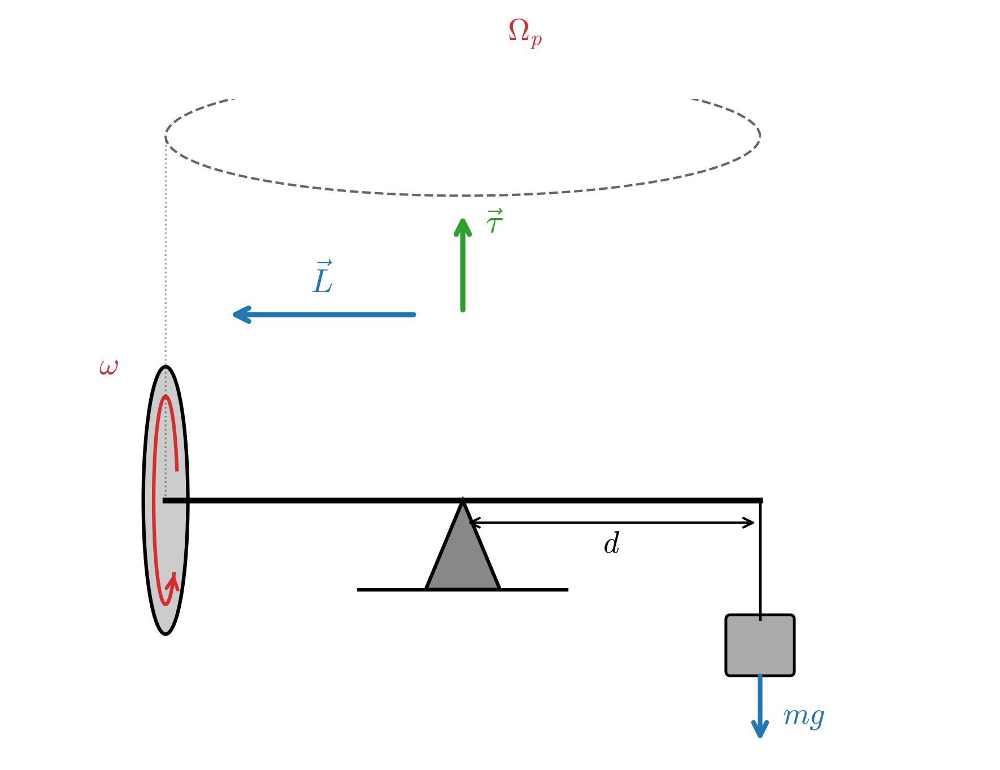
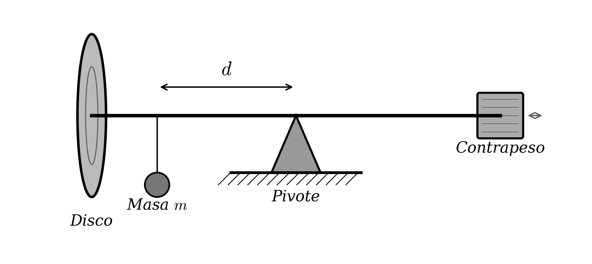
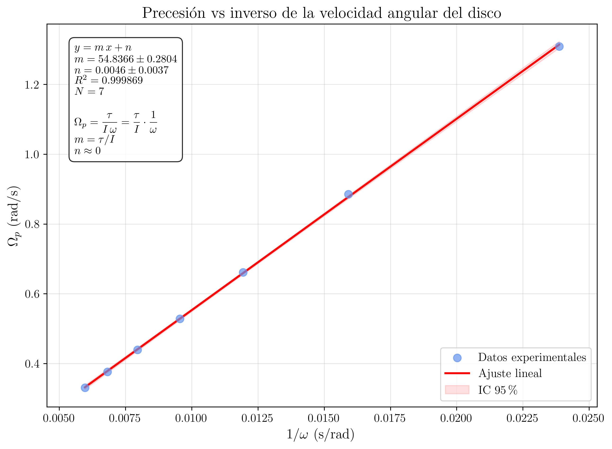
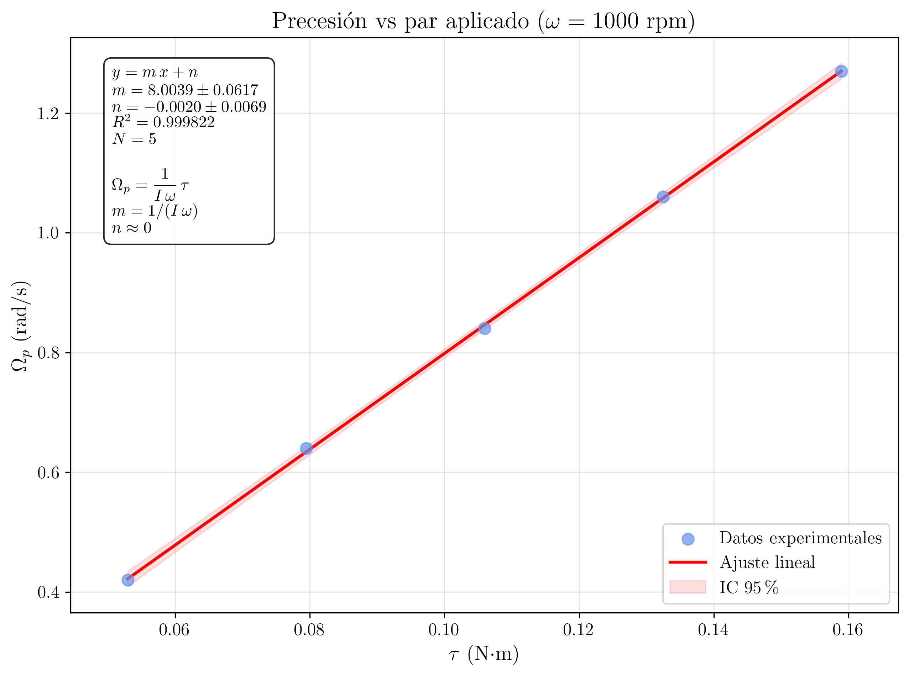

Laboratorio de Mecánica — UNED
2026-03-20
Estudio de la precesión de un giróscopo. Verificación experimental de la relación \Omega_p = mgd/(I\omega) entre la velocidad angular de precesión, el par aplicado y el momento angular de giro. Determinación del momento de inercia del disco.
En esta experiencia se estudia el fenómeno de la precesión giroscópica. Se investiga la relación entre la velocidad angular de precesión de un giróscopo y su velocidad angular de giro, así como la dependencia con el par gravitatorio aplicado. A partir de los datos experimentales se verifica la expresión teórica para la velocidad de precesión y se determina el momento de inercia del disco giratorio.
Un cuerpo rígido que gira con velocidad angular \omega alrededor de un eje que es eje de simetría posee un momento angular \vec{L} dado por:
\vec{L} = I\,\vec{\omega} \tag{1}
donde I es el momento de inercia del cuerpo respecto al eje de rotación. Para un disco macizo homogéneo de masa M y radio R, el momento de inercia respecto a su eje de simetría es:
\boxed{I = \dfrac{1}{2}\,M\,R^{2}} \tag{2}
La segunda ley de Newton para la rotación establece que el par neto (torque) aplicado sobre un sistema es igual a la tasa de cambio temporal del momento angular:
\vec{\tau} = \dfrac{d\vec{L}}{dt} \tag{3}
Considerese un giróscopo cuyo disco gira con velocidad angular \omega alrededor de su eje de simetría. Si el centro de masas del disco se encuentra a una distancia d del punto de apoyo (pivote), el peso del disco produce un par gravitatorio respecto al pivote:
\tau = M\,g\,d \tag{4}
Este par es perpendicular al momento angular \vec{L}, lo que provoca un cambio en la dirección de \vec{L} pero no en su módulo.

En un intervalo de tiempo dt, el cambio en el momento angular es:
d\vec{L} = \vec{\tau}\,dt \tag{5}
Dado que \vec{\tau} \perp \vec{L}, el vector \vec{L} describe un cono alrededor del eje vertical, girando con una velocidad angular denominada velocidad de precesión, \Omega_{p}. La magnitud del cambio dL se relaciona geométricamente con el ángulo de precesión d\phi mediante:
dL = L\,\sin\theta\,d\phi \tag{6}
donde \theta es el ángulo que forma el eje del giróscopo con la vertical. Igualando con Ecuación 5:
L\,\sin\theta\,\dfrac{d\phi}{dt} = \tau = M\,g\,d
Para el caso particular en que el eje del giróscopo es horizontal (\theta = 90°, \sin\theta = 1), la velocidad de precesión resulta:
\Omega_{p} = \dfrac{d\phi}{dt} = \dfrac{M\,g\,d}{L} = \dfrac{M\,g\,d}{I\,\omega}
De forma general, la expresión para la velocidad angular de precesión es:
\boxed{\Omega_{p} = \dfrac{M\,g\,d}{I\,\omega\,\sin\theta}} \tag{7}
que en el caso habitual de eje horizontal (\theta = 90°) se reduce a:
\boxed{\Omega_{p} = \dfrac{M\,g\,d}{I\,\omega}} \tag{8}
Interpretación física
La ecuación Ecuación 8 predice que:
- La velocidad de precesión \Omega_{p} es inversamente proporcional a la velocidad de giro \omega del disco (a par constante).
- La velocidad de precesión \Omega_{p} es directamente proporcional al par aplicado \tau = Mgd (a velocidad de giro constante).
- La precesión se produce en la dirección en la que el par tiende a alinear \vec{L} con \vec{\tau}, es decir, el giróscopo gira en la dirección en la que cae el momento angular hacia el par.
En la práctica, cuando se libera el giróscopo, ademas del movimiento de precesión se observa una oscilacion superpuesta del eje del giróscopo, denominada nutación. Este movimiento se debe a que, en el instante inicial, el momento angular del sistema no coincide exactamente con la dirección necesaria para una precesión estacionaria pura. La nutación se amortigua rápidamente por rozamiento, y para las medidas experimentales conviene esperar a que desaparezca antes de cronometrar la precesión.
El giróscopo consta de un disco metálico montado sobre un eje que puede girar libremente en un soporte con pivote. El eje se apoya en un punto que permite rotación libre en las tres dimensiones. En uno de los extremos del eje se situa el disco giratorio y en el otro se pueden colocar contrapesos para equilibrar el sistema. Se dispone ademas de un tacómetro para medir la velocidad de giro del disco, un cronómetro para medir el periodo de precesión y masas calibradas para variar el par gravitatorio.

1
Equilibrado del giróscopo. Con el disco en reposo, ajustar el contrapeso de manera que el eje permanezca horizontal (equilibrio indiferente). En está condicion, el par neto sobre el eje es nulo. Utilizar el nivel de burbuja para verificar la horizontalidad.
2
Determinación del momento de inercia del disco. Medir con el calibre el radio R del disco y con la balanza su masa M. Calcular el momento de inercia teórico utilizando la ecuación Ecuación 2.
Datos
experimentales
| Magnitud | Valor |
|---|---|
| Masa del disco, M | 1.500 \pm 0.001 kg |
| Radio del disco, R | 0.127 \pm 0.001 m |
| Momento de inercia, I = \frac{1}{2}MR^{2} | 1.21 \times 10^{-2} kg\cdotm^{2} |
Comprobacion: I = \frac{1}{2}\times 1.500 \times (0.127)^{2} = \frac{1}{2}\times 1.500 \times 0.01613 = 1.210 \times 10^{-2}\textrm{ kg}\cdot\textrm{m}^{2}
3
Precesion en función de la velocidad de giro (par constante). Colocar una masa adicional m = 0.200 kg a una distancia d = 0.250 m del pivote sobre el eje del giróscopo (del lado del disco), de modo que el par gravitatorio sea \tau = m\,g\,d.
Hacer girar el disco a diferentes velocidades angulares \omega y, una vez estabilizada la precesión (tras la desaparicion de la nutación), medir el tiempo t_{p} que tarda el eje en completar una vuelta completa de precesión (2\pi rad).
La velocidad de precesión sera: \Omega_{p} = \dfrac{2\pi}{t_{p}}.
Notas:
- Esperar siempre a que la nutación se amortigüe antes de comenzar la medida.
- Mantener el eje lo más horizontal posible (\theta \approx 90°).
- Medir la velocidad de giro \omega con el tacómetro justo antes y despues de cada medida de precesión y promediar, para tener en cuenta la desaceleración del disco por rozamiento.
Datos
experimentales
Par aplicado: \tau = m\,g\,d = 0.200 \times 9.81 \times 0.250 = 0.4905 N\cdotm
| Medida | \omega\textrm{ (rpm)} | \omega\textrm{ (rad/s)} | t_{p}\textrm{ (s)} | \Omega_{p}\textrm{ (rad/s)} | 1/\omega\textrm{ (s/rad)} |
|---|---|---|---|---|---|
| 1 | 400 | 41.9 | 6.5 | 0.967 | 0.02387 |
| 2 | 500 | 52.4 | 8.2 | 0.766 | 0.01909 |
| 3 | 600 | 62.8 | 9.7 | 0.648 | 0.01592 |
| 4 | 700 | 73.3 | 11.4 | 0.551 | 0.01364 |
| 5 | 800 | 83.8 | 12.9 | 0.487 | 0.01193 |
| 6 | 900 | 94.2 | 14.6 | 0.430 | 0.01061 |
| 7 | 1000 | 104.7 | 16.3 | 0.385 | 0.00955 |
| 8 | 1100 | 115.2 | 17.8 | 0.353 | 0.00868 |
| 9 | 1200 | 125.7 | 19.5 | 0.322 | 0.00796 |
| 10 | 1400 | 146.6 | 22.7 | 0.277 | 0.00682 |
La teoría predice que, a par constante, la relación entre \Omega_{p} y \omega es:
\Omega_{p} = \dfrac{\tau}{I\,\omega} = \dfrac{\tau}{I}\cdot\dfrac{1}{\omega}
Esto es, \Omega_{p} es una función lineal de \dfrac{1}{\omega}, que pasa por el origen, con pendiente \dfrac{\tau}{I}:
\boxed{\Omega_{p} = \dfrac{\tau}{I}\cdot\dfrac{1}{\omega}} \tag{9}
a = \dfrac{\tau}{I} \Rightarrow \boxed{I_{\textrm{exp}} = \dfrac{\tau}{a}} \tag{10}

Análisis de la regresión lineal: \Omega_{p} vs 1/\omega
Según la ecuación Ecuación 9, al representar \Omega_{p} (eje y) frente a \dfrac{1}{\omega} (eje x), se debería obtener una línea recta que pasa por el origen.
La pendiente de la recta es: a = \dfrac{\tau}{I}
Con los datos experimentales, la pendiente obtenida del ajuste es aproximadamente: a \approx 40.5 \textrm{ rad}^{2}\cdot\textrm{s}^{-2} \cdot \textrm{m}^{-1}
El valor teórico esperado para la pendiente es: a_{\textrm{teo}} = \dfrac{\tau}{I} = \dfrac{0.4905}{1.210 \times 10^{-2}} = 40.54 \textrm{ rad}^{2}\cdot\textrm{s}^{-2}\cdot\textrm{m}^{-1}
El momento de inercia experimental sera: \boxed{I_{\textrm{exp}} = \dfrac{\tau}{a} = \dfrac{0.4905}{a}}
Y su error: \boxed{\Delta I_{\textrm{exp}} = \left|\dfrac{\tau}{a^{2}}\right|\cdot\left|\Delta a\right|}
4
Precesion en función del par aplicado (velocidad de giro constante). Mantener la velocidad de giro del disco aproximadamente constante en \omega \approx 800 rpm (\approx 83.8 rad/s) y variar el par aplicado colocando diferentes masas m a la misma distancia d = 0.250 m del pivote. Medir el periodo de precesión en cada caso.
Datos
experimentales
Velocidad de giro constante: \omega \approx 800 rpm = 83.8 rad/s
Distancia al pivote: d = 0.250 m
| Medida | m\textrm{ (kg)} | \tau = m\,g\,d\textrm{ (N}\cdot\textrm{m)} | t_{p}\textrm{ (s)} | \Omega_{p}\textrm{ (rad/s)} |
|---|---|---|---|---|
| 1 | 0.050 | 0.1226 | 51.8 | 0.121 |
| 2 | 0.100 | 0.2453 | 26.1 | 0.241 |
| 3 | 0.150 | 0.3679 | 17.2 | 0.365 |
| 4 | 0.200 | 0.4905 | 12.9 | 0.487 |
| 5 | 0.250 | 0.6131 | 10.4 | 0.604 |
| 6 | 0.300 | 0.7358 | 8.6 | 0.731 |
| 7 | 0.350 | 0.8584 | 7.4 | 0.849 |
| 8 | 0.400 | 0.9810 | 6.5 | 0.967 |
La teoría predice que, a velocidad de giro constante, la relación entre \Omega_{p} y \tau es lineal:
\boxed{\Omega_{p} = \dfrac{1}{I\,\omega}\cdot\tau} \tag{11}
b = \dfrac{1}{I\,\omega} \Rightarrow \boxed{I_{\textrm{exp}} = \dfrac{1}{b\,\omega}} \tag{12}
\boxed{\Delta I_{\textrm{exp}} = \dfrac{1}{b^{2}\,\omega}\cdot\left|\Delta b\right|}

Análisis de la regresión lineal: \Omega_{p} vs \tau
Según la ecuación Ecuación 11, al representar \Omega_{p} (eje y) frente a \tau (eje x), se debería obtener una línea recta que pasa por el origen.
La pendiente de la recta es: b = \dfrac{1}{I\,\omega}
El valor teórico esperado para la pendiente es: b_{\textrm{teo}} = \dfrac{1}{I\,\omega} = \dfrac{1}{1.210 \times 10^{-2} \times 83.8} = \dfrac{1}{1.014} = 0.986 \textrm{ (N}\cdot\textrm{m)}^{-1}\cdot\textrm{s}^{-1}
El momento de inercia experimental sera: \boxed{I_{\textrm{exp}} = \dfrac{1}{b\,\omega}}
5
Comparacion de resultados. Comparar los valores del momento de inercia obtenidos por los tres métodos:
Comparacion de los valores de I
1. Método geometrico (teórico):
I = \frac{1}{2}MR^{2} = \frac{1}{2}\times 1.500 \times (0.127)^{2} = 1.210 \times 10^{-2}\textrm{ kg}\cdot\textrm{m}^{2}
El error se propaga a partir de \Delta M y \Delta R: \Delta I = \frac{1}{2}\sqrt{R^{4}(\Delta M)^{2} + 4M^{2}R^{2}(\Delta R)^{2}} \Delta I = \frac{1}{2}\sqrt{(0.127)^{4}(0.001)^{2} + 4(1.500)^{2}(0.127)^{2}(0.001)^{2}} \approx 1.9 \times 10^{-4}\textrm{ kg}\cdot\textrm{m}^{2}
\boxed{I_{\textrm{teo}} = (1.210 \pm 0.019) \times 10^{-2}\textrm{ kg}\cdot\textrm{m}^{2}}
2. Método de precesión vs 1/\omega:
A partir de la pendiente a del ajuste lineal del apartado 3: I_{\textrm{exp,3}} = \dfrac{\tau}{a} \pm \dfrac{\tau}{a^{2}}\cdot\Delta a
3. Método de precesión vs \tau:
A partir de la pendiente b del ajuste lineal del apartado 4: I_{\textrm{exp,4}} = \dfrac{1}{b\,\omega} \pm \dfrac{1}{b^{2}\,\omega}\cdot\Delta b
Los tres valores deben ser compatibles dentro de sus márgenes de error.
6
Observación de la nutación. Poner en marcha el giróscopo con una velocidad de giro intermedia (\omega \approx 800 rpm) y un par moderado. Liberar bruscamente el eje. Describir cualitativamente el movimiento de nutación observado:
Ejercicios Previos
- Demostrar que el momento de inercia de un disco macizo homogéneo de masa M y radio R respecto a un eje perpendicular al disco que pasa por su centro es I = \frac{1}{2}MR^{2}.
Demostración de I = \frac{1}{2}MR^{2}
El momento de inercia de un cuerpo respecto a un eje se define como: I = \int r^{2}\,dm
Para un disco macizo homogéneo de masa M, radio R y espesor h, la densidad superficial de masa es: \sigma = \dfrac{M}{\pi R^{2}}
Utilizando coordenadas polares, un elemento de area es dA = r\,dr\,d\theta, y el elemento de masa correspondiente es dm = \sigma\,dA = \sigma\,r\,dr\,d\theta. El momento de inercia se calcula:
I = \int_{0}^{2\pi}\int_{0}^{R} r^{2}\,\sigma\,r\,dr\,d\theta = \sigma\int_{0}^{2\pi}d\theta\int_{0}^{R}r^{3}\,dr = \sigma \cdot 2\pi \cdot \dfrac{R^{4}}{4}
Sustituyendo \sigma = \dfrac{M}{\pi R^{2}}:
I = \dfrac{M}{\pi R^{2}} \cdot 2\pi \cdot \dfrac{R^{4}}{4} = \dfrac{M \cdot 2\pi \cdot R^{4}}{4\pi R^{2}} = \boxed{\dfrac{1}{2}\,M\,R^{2}}
- Si el giróscopo gira en sentido antihorario (visto desde el extremo del eje donde está el disco) y el par gravitatorio tiende a hacer bajar el extremo del disco, ¿en que sentido (horario o antihorario, visto desde arriba) se produce la precesión? Razonar la respuesta utilizando la regla d\vec{L} = \vec{\tau}\,dt.
Sentido de la precesión
El momento angular \vec{L} apunta en la dirección del eje del giróscopo, en el sentido dado por la regla de la mano derecha aplicada al giro del disco. Si el disco gira en sentido antihorario visto desde el extremo del disco, \vec{L} apunta hacia fuera a lo largo del eje (hacia el disco).
El par gravitatorio \vec{\tau} = \vec{r} \times M\vec{g} es perpendicular tanto al eje del giróscopo como a la vertical. Su dirección concreta se determina con el producto vectorial: si el disco está a la derecha del pivote y el peso tira hacia abajo, \vec{\tau} apunta horizontalmente en una dirección perpendicular al eje.
Dado que d\vec{L} = \vec{\tau}\,dt, el cambio en \vec{L} tiene la misma dirección que \vec{\tau}. El extremo del vector \vec{L} se desplaza en la dirección de \vec{\tau}, lo que produce una rotación del eje en el plano horizontal.
Aplicando la regla de la mano derecha con la geometría descrita, la precesión se produce en sentido antihorario vista desde arriba.
- ¿Qué es la nutación? ¿Por que se observa experimentalmente al soltar el giróscopo? ¿Qué sucede con la frecuencia de nutación cuando se aumenta la velocidad de giro \omega?
Nutacion
La nutación es una oscilacion del ángulo \theta (el ángulo que forma el eje del giróscopo con la vertical) superpuesta al movimiento de precesión. Mientras la precesión es un giro lento y uniforme del eje alrededor de la vertical, la nutación hace que el eje cabecee arriba y abajo mientras precesa.
Se observa experimentalmente porque, al soltar el giróscopo, el eje inicialmente no tiene la velocidad de precesión correcta (\Omega_{p}). El sistema necesita repartir la energia entre precesión y nutación para satisfacer las condiciones iniciales. Si se suelta desde el reposo (sin velocidad horizontal), parte de la energia potencial se convierte en energia cinetica de nutación.
La frecuencia angular de nutación, \omega_{n}, es aproximadamente: \omega_{n} \approx \dfrac{I\,\omega}{I_{\perp}} donde I_{\perp} es el momento de inercia respecto a un eje perpendicular al eje de giro. Por lo tanto, la frecuencia de nutación aumenta al aumentar \omega: cuanto más rápido gira el disco, más rápido oscila la nutación (y con menor amplitud), de modo que se hace menos perceptible.
- Calcular la velocidad de precesión teórica esperada para un giróscopo con disco de M = 1.500 kg, R = 0.127 m, distancia al pivote d = 0.250 m, y velocidad de giro \omega = 800 rpm. Expresar el resultado en rad/s y en rpm.
Cálculo numerico
Primero, se calcula el momento de inercia: I = \frac{1}{2}MR^{2} = \frac{1}{2}\times 1.500 \times (0.127)^{2} = 1.210 \times 10^{-2}\textrm{ kg}\cdot\textrm{m}^{2}
La velocidad de giro en rad/s: \omega = 800\textrm{ rpm} = 800 \times \dfrac{2\pi}{60} = 83.78\textrm{ rad/s}
El par gravitatorio: \tau = M\,g\,d = 1.500 \times 9.81 \times 0.250 = 3.679\textrm{ N}\cdot\textrm{m}
Atención: en los apartados 3 y 4 del método operatorio se utiliza la masa adicional m (no la masa M del disco) para generar el par, porque el sistema se equilibra previamente con el contrapeso. En este ejercicio, a modo de ejemplo, se usa M directamente (como si el disco no estuviera equilibrado).
La velocidad de precesión: \Omega_{p} = \dfrac{\tau}{I\,\omega} = \dfrac{3.679}{1.210 \times 10^{-2} \times 83.78} = \dfrac{3.679}{1.014} = 3.63\textrm{ rad/s}
En rpm: \Omega_{p} = 3.63 \times \dfrac{60}{2\pi} = 34.6\textrm{ rpm}
Ejercicios Posteriores
A partir de los datos del apartado 3 del método operatorio, realizar la regresión lineal de \Omega_{p} frente a 1/\omega y calcular I_{\textrm{exp}} con su error \Delta I_{\textrm{exp}}.
A partir de los datos del apartado 4 del método operatorio, realizar la regresión lineal de \Omega_{p} frente a \tau y calcular I_{\textrm{exp}} con su error \Delta I_{\textrm{exp}}.
Discutir las posibles fuentes de error sistemático en el experimento (rozamiento en el pivote, desaceleración del disco, eje no perfectamente horizontal, contribución del eje al momento de inercia, etc.).
Si en lugar de un disco macizo se utilizara un aro de masa M y radio R (I_{\textrm{aro}} = MR^{2}), ¿cómo cambiaría la velocidad de precesión respecto al caso del disco? Calcular la razón \Omega_{p,\textrm{aro}}/\Omega_{p,\textrm{disco}}.
Respuesta al ejercicio 4
Para el aro: I_{\textrm{aro}} = MR^{2}.
Para el disco: I_{\textrm{disco}} = \frac{1}{2}MR^{2}.
A igualdad de par y de velocidad de giro: \dfrac{\Omega_{p,\textrm{aro}}}{\Omega_{p,\textrm{disco}}} = \dfrac{\tau/(I_{\textrm{aro}}\,\omega)}{\tau/(I_{\textrm{disco}}\,\omega)} = \dfrac{I_{\textrm{disco}}}{I_{\textrm{aro}}} = \dfrac{\frac{1}{2}MR^{2}}{MR^{2}} = \dfrac{1}{2}
El aro precesaría a la mitad de velocidad que el disco, porque tiene el doble de momento de inercia (toda la masa está concentrada en el borde).
- ¿Por que un giróscopo que gira a alta velocidad mantiene su eje de giro estable en el espacio? Relacionar está propiedad con el uso de giroscopos en navegacion (brujula giroscópica).